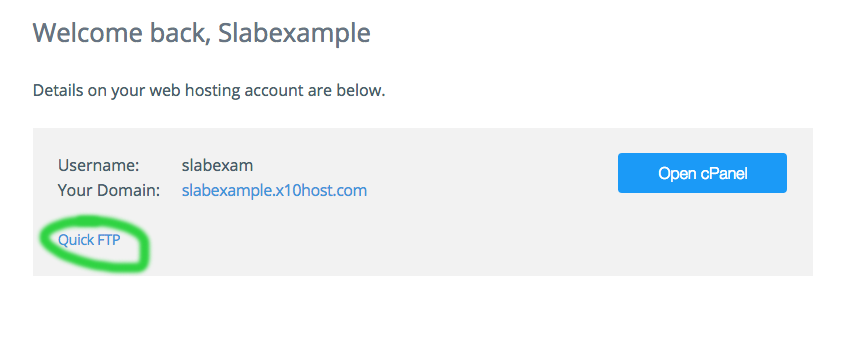

How to Set Up EVERYTHING
I. Before beginning
- Pick a handle or codename to use instead of your real name. This guide will use "slabexample" instead of "Mr. H".
- Log into your email account to make sure you remember the password. Leave this tab open.
- If you can't access your e-mail, sign up for a new account. Gmail makes this easy.
II. Setting up the host
- Go to x10hosting.com and click the button labelled 'Create my Account'.
- Put your handle or codename in the space provided, as shown:
- Fill in your e-mail address (the one you're already logged into on a separate tab) and continue signing up.
- Check your e-mail and look for the confirmation message. Click on the link to confirm your e-address:
- When asked for your first name.... don't give it. Use your handle instead.
- You'll see a page like the one below. Click on 'Quick FTP'. 
- Highlight and copy the hostname. Make note of your username: it may have been shortened or lengthened to eight letters (eg. 'slabexam' as seen below). When you have copied the hostname to the clipboard, click the button labelled 'Open cPanel'.
- Click the button labelled 'Add Website'.
- You'll see a page like the one below. Use your handle as the website name. Leave the other fields alone and click 'Add Website'.
III. Setting up FTP
- Go to CodeAnywhere.com and click the button labelled 'Sign up for Free'.
- Fill in your e-mail address (again, the one you're logged into on the other tab), choose a password, and try to prove you're human.
- If you've convinced them that you're human, you should see the page below. Click the link to the editor, the one that says, 'here'.
- The connection wizard should be the next screen you see. You want to connect to your server using File Transfer Protocol, so click "FTP Server" in the left-hand column.
-
- For connection name, use your handle.
- For hostname, paste in the hostname you copied earlier on x10. It may be different than the one in the image below.
- For username, put in the eight-letter username x10 gave you earlier.
- The password is your password for x10, not the password for CodeAnywhere or your e-mail.
- For 'Initial dir', put in "public_html", just like that, all lowercase with the underscore.
- Doublecheck that it looks like the image below and then click 'Connect'.
IV. Put your page on the Web
- Right-click on the connection (it will be labelled with your handle).
- Click on upload. Drag your files into the box that appears.
- Right-click on your firstpage.html and select 'Rename'. Rename the file to "index.html" .
- Go to your website (eg. http://slabexample.x10host.com ) and check that the files are in place. If you did not rename your firstpage to "index.html", you'll see a page like the one below. Please fix this.
IV. Getting your own domain
- Navigate to a domain registrar. You can register a free .tk domain at dot.tk.
- Complete the registration process. Once you've confirmed you e-mail and registered, you should NOT DONE WILL FINISH AFTER CLASS.